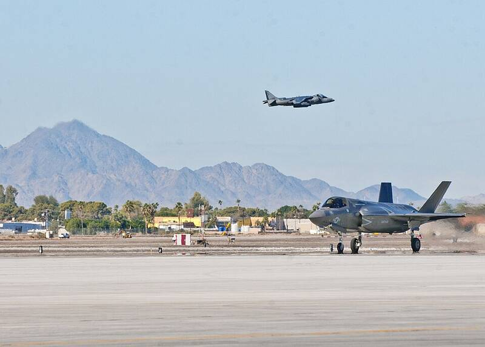

MCAS Yuma
Arizona

Marine Corps air station and training range. 1
Open in the interactive Watcher
Sources
- Marine Corps Air Station Yuma Wikipedia
Arizona

Marine Corps air station and training range. 1
Open in the interactive Watcher